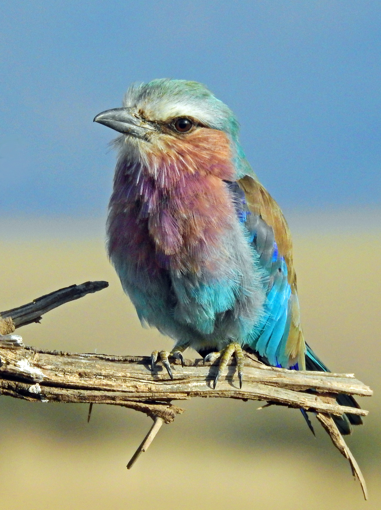
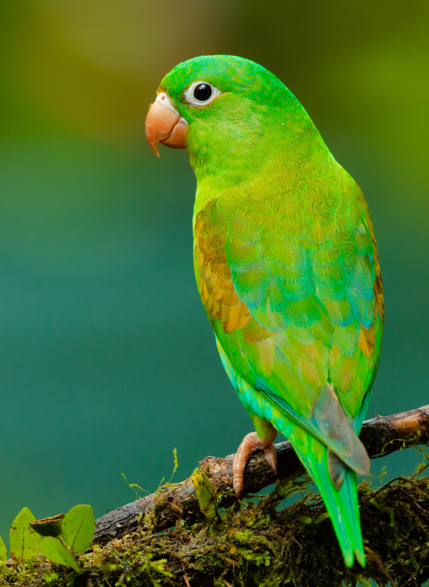

Yellowstone National Park
- There are more than 10,000 hydrothermal features
- Has more than 500 active geysers
- The park is 96% in Wyoming
- Last: Yellowstone was established on March 1, 1872.
Yosemite National Park
- It was home to the country's first park guardian
- One of the parks waterfall glows.
- This park is revered as the birth place of rock climbing as sport.
- Last: Buffalo soldiers were some of the park's first protectors.
Big Bend National Park
- Big Bend was made on June 20, 1935.
- The name Big Bend comes from a large bend in Rio Grande River along the park boundary.
- Floating the Rio Grande River is a popular activity.
- Last: The highest elevation in Big Bend is 7.832 feet on Emory Peak.

